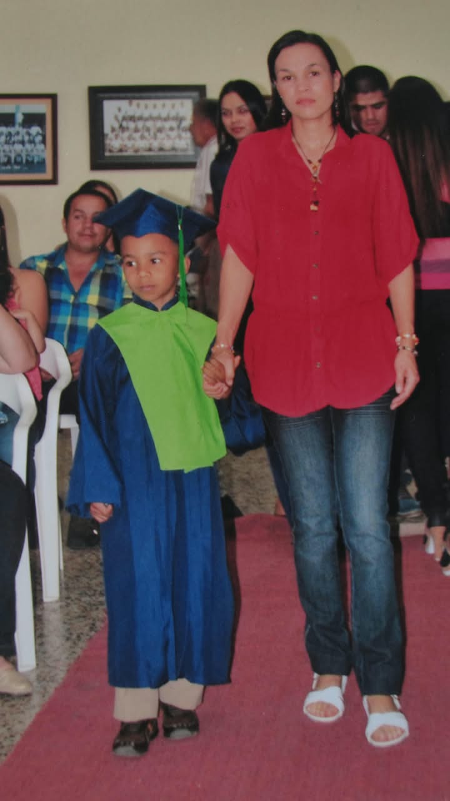

STUDENT PROFILEARM / CO
AGE 16BASED IN ARMENIA, Q.
DRAG TO ROTATE ↗
UNA VIDA EN CONSTRUCCIÓN
Hola, soy Gabriel. Aquí cuento qué quiero hacer con mi vida y por qué.
→EL QUE NO SUEÑA
NUNCA PROGRESA.
A QUICK INTRODUCTION
A little about
where I come from.
Hello. My name is Gabriel. I am 16 years old. I study Software Programming at SENA in Armenia, Quindío, Colombia. I want to become a good programmer and build useful things for people.
I was born in Pijao, a small town in Quindío. I lived there for most of my life. In April 2025, I moved to Armenia to study and find new opportunities.
I like programming and technology very much. I listen to house music when I write code. It helps me focus. I also love basketball and I play when I have free time.
I am creative, a good leader, optimistic and curious. I pay attention to small details. I work well with others and I do not give up easily when a problem is hard.
I question, improve, and build things that help real people.
function saludar(nombre) {
return "Hola, " + nombre + "!";
}
saludar("tu nombre"); // ← aquí entras túAPRENDER PARA CREAR
Desliza las tarjetas
para descubrir el camino.
Técnico en Programación de Software desde grado 10 y después Tecnólogo en Análisis y Desarrollo de Software (ADSO) en el SENA. Aprendo a entender lo que necesita el cliente, diseñar sistemas y construir páginas web y aplicaciones.
ADSOEl Tecnólogo ADSO dura 27 meses: 21 de etapa lectiva y 6 de etapa productiva. Se ven lenguajes de programación, bases de datos, desarrollo web y móvil, análisis de requisitos, diseño de sistemas, pruebas, metodologías ágiles como Scrum y Kanban e inglés técnico.
LEARN / BUILD / REPEATTerminar el grado 11, presentar los resultados de las pruebas Saber 11, pasar la prueba de admisión del SENA, ser mayor de 14 años y tener conocimientos básicos de informática.
NEXT STEP →Ganas de aprender tecnología, creatividad para resolver problemas, responsabilidad y saber trabajar en equipo.
MINDSETEn empresas de software, creando páginas web y diseñando interfaces, desde casa o montando mi propio negocio.
MAKE IT REALDE DÓNDE VENGO Y HACIA DÓNDE VOY
Con logos, duración
y costos reales.

LA DECISIÓN TIENE UNA HISTORIA
PULSA UNA TARJETA PARA VER LA RESPUESTA.
→La programación es la única disciplina donde con una computadora y lógica puedes crear herramientas que solucionen necesidades reales sin depender de materiales costosos.
A diferencia de otras materias donde el aprendizaje es puramente teórico, en el SENA cada línea de código tiene un resultado visible en pantalla. Si diseño un sistema para que un negocio de Armenia controle sus ventas, puedo construirlo de inicio a fin con mis propias manos.
El mundo funciona sobre software. El sector tecnológico cuenta con amplia demanda de desarrolladores bien capacitados, permitiendo trabajar de forma remota y con estabilidad.
Tener el título técnico del SENA al terminar el colegio me abre las puertas a contratos de aprendizaje remunerados antes de los 18 años. Esto me permite financiar mi carrera universitaria en Ingeniería de Sistemas sin ser una carga económica para mi familia.
Aprender a programar enseña a pensar con método y lógica para descomponer dificultades complejas y crear soluciones aplicables a la vida cotidiana.
El Quindío es reconocido por el café y el turismo, pero necesita dar un salto tecnológico. Mi meta es aplicar el software para optimizar procesos agrícolas, comerciales y educativos en mi ciudad, demostrando el talento joven de nuestra región.
APRENDER DE LOS ERRORES
Fallar es parte
del proceso.
La primera página web que hice se veía perfecta en mi computador, pero en el celular todo se desordenaba: textos gigantes, imágenes fuera de lugar, botones imposibles de tocar.
FAIL → LEARNDescubrí que "funciona en mi máquina" no es suficiente. Aprendí sobre responsive design, media queries y a probar en diferentes dispositivos antes de decir "está listo".
RESPONSIVEEse error me enseñó que un buen programador no solo escribe código: verifica, prueba y corrige. Cada error es una lección que no se olvida.
TEST → SHIPLO QUE PROMETO HACER
Promesas con
fecha y medida.
SENA · Armenia, Quindío · Programación de Software. Me gradúo el 27 de noviembre de 2026.
NOV 2025Página web real para un negocio real. Demostrar que puedo crear valor para otros.
2026Portafolio visible y verificable. Cada proyecto es una prueba de mi progreso.
CONTINUOInstitución Universitaria EAM · 8 semestres por ciclos propedéuticos.
2029—2033MÁS QUE ESCRIBIR CÓDIGO
Toca cada tarea
para ver una demo.
PASO A PASO, CON DIRECCIÓN
Mis metas se construyen
con cada paso.
PULSA CADA META PARA VER LOS PASOS.
UNA RUTA QUE SE RECORRE
Desliza
para avanzar.
Me gradúo como Técnico en Programación de Software el 27 de noviembre. Estudié desde grado 10 en el SENA.
27 meses, 3.984 horas. 21 meses lectiva + 6 productiva. Bases de datos, web, móvil, Scrum, Kanban, inglés técnico.
8 semestres en la EAM por ciclos propedéuticos (5 tecnólogo + 3 universitario). Presencial en Armenia.
Diseño de experiencia, calidad de software, IA o ciberseguridad. La EAM ofrece estas especializaciones (2 semestres).
Equipo de confianza, clientes internacionales, impacto en el Quindío.
CÓMO EMPIEZA TODO
Paso a paso,
como un commit.
Todo empieza con una página vacía. Solo HTML, sin estilo, sin vida.
Con una línea de HTML, aparece contenido en la pantalla.
Con CSS, el texto gris se vuelve terracota, el fondo se vuelve papel.
Con JavaScript, el texto responde cuando haces clic.
Esperando...
EXPECTATIVAS CON LOS PIES EN LA TIERRA
Cifras mensuales aproximadas. El salario cambia según la experiencia, la ciudad y el tipo de trabajo.
CIFRAS ORIENTATIVAS; PUEDEN CAMBIAR SEGÚN EL MERCADO Y LA EXPERIENCIA.
Empresas de software en Armenia y trabajo remoto para empresas en Colombia o en otros países.
En Armenia, Bogotá o Medellín, o desde casa para empresas de afuera.
Hay competencia por los empleos y el inglés es clave para crecer en esta profesión.
Inglés técnico, programación, inteligencia artificial y ciberseguridad.
Quiero conocer empresas locales de software. Confirmaré sus nombres antes de publicarlos.
EL VALOR DE PROGRAMAR
Arrastra para
ver la diferencia.
CÓDIGO Y RESULTADO
Clic en un comando
y ve el resultado.
Soy un elemento visual
PROGRAMAR ES ESCRIBIR Y VER
Edita el código
y ve el resultado.
UNA IMAGEN PARA SEGUIR AVANZANDO
Un futuro que quiero
construir y compartir.
Estos sueños me recuerdan por qué vale la pena aprender, crear y seguir adelante.
ARRASTRA PARA MOVER / TOCA PARA ACERCARTener mi propia empresa de software y un equipo en el que confíe.
Trabajar desde casa con clientes de otros países.

03 / AGRADECERComprarle una casa a mi mamá y viajar con ella.
EL QUE NO SUEÑA
NUNCA PROGRESA.